International and National Clubs in Pict
IEEE
Institute of Electrical and Electronics Engineers
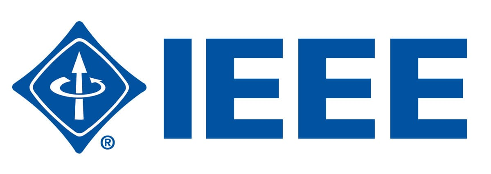
01
PICT IEEE
PICT IEEE Student Branch (PISB) was established in the year 1988 with an aim of inculcating a sense of technical awareness amongst its student members. PISB aims to escalate the knowledge and trends in the diverse fields of technologies amongst its members. PISB upholds two major events every year - Credenz and Credenz Tech Dayz with the first one being conducted in odd semester and the latter one in even semester.
Read moreCSI
Computer Society of India
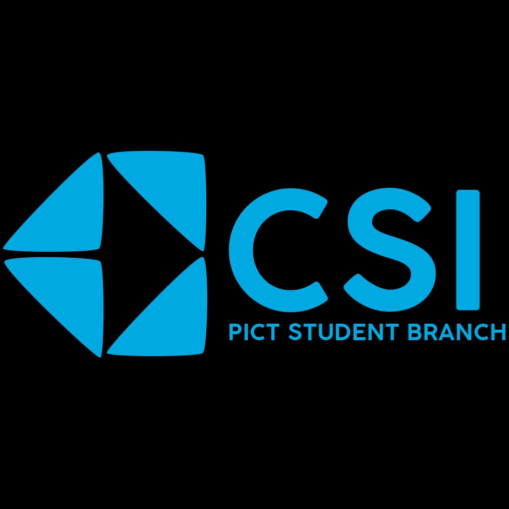
02
PICT CSI
PICT CSI Student Branch, working under CSI, was established in 2016 with an objective to facilitate research, knowledge and career enhancement for the students, along with inspiring and nurturing new entrants into the industry. It provides a platform for technical and non-technical education.
Read moreACM
Association of Computing Machinery

03
PICT ACM
PICT ACM Student Chapter (PASC), a student chapter organization subsidiary of the Association of Computing Machinery(ACM), consists of highly motivated students, ready to learn and help each other bring the best out of them. PASC began in 2011, with the perspective of fostering technical and non technical qualities in an individual and helping them to shape their future.
Read moreMUN
Model United Nation
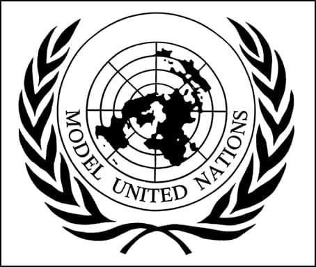
04
PICT MUN
The PICT MUN Club, established in 2016, consists of a group of inquisitive students who are passionate about social, political and economic issues that elude the future of our world. PICT MUN strongly believes in the important role of dialogue and discussion in solving any problem and hence always abides by its motto - 'Think.Discuss.Prosper.'
Read moreRobotics
PICT Robotics
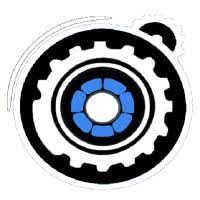
05
PICT Robotics
PICT is a renowned and highly esteemed institute Ranked #8 among private engineering institutions in India for excellence in education and research. Pune Institute of Computer Technology (PICT) Robotics Team was founded in 2008. PICT Robotics team takes part in the annual Asia-Pacific Robot Contest (ABU Robocon), founded in 2002 by Asia-Pacific Broadcasting Union.
Read moreArt-Circle
PICT Art-Circle
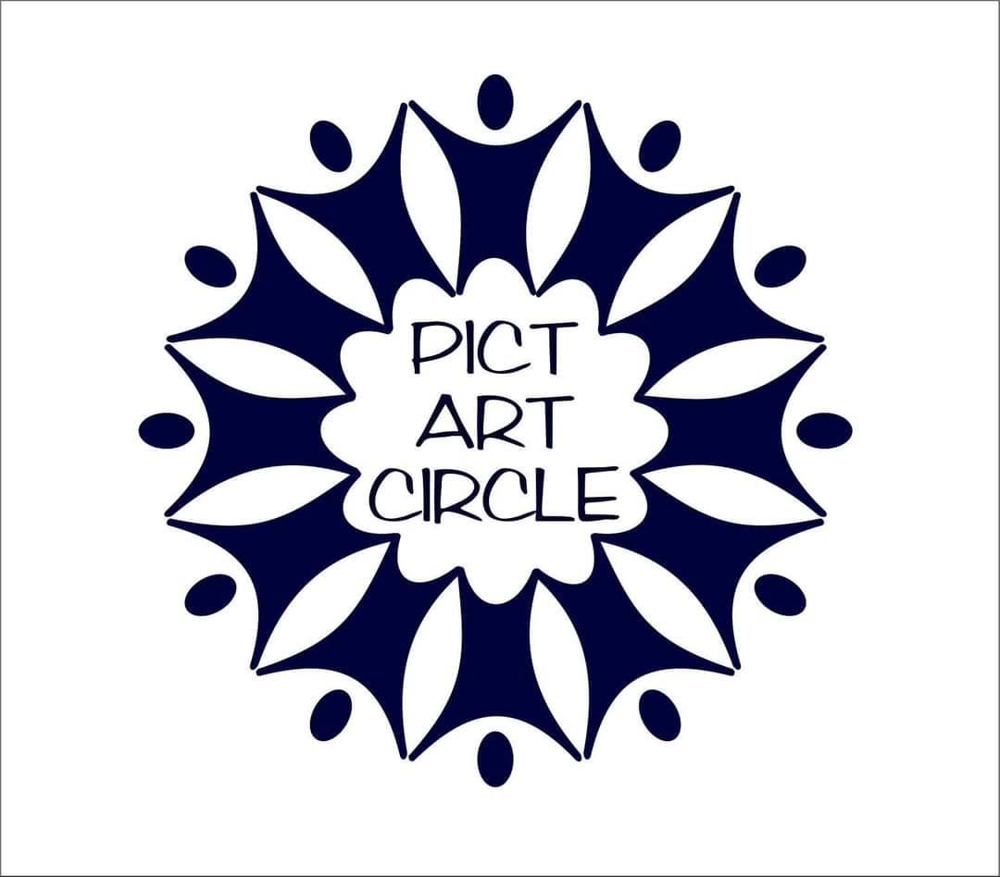
06
PICT Art-Circle
PICT ART CIRCLE is the Cultural group of the PICT college that officially represents the college on various levels of Drama and other Art Form Competition
Read moreTed-X
PICT TedX
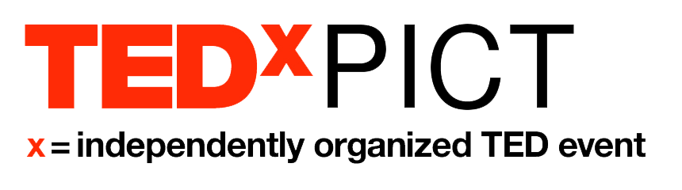
07
PICT TedX
TEDxPICT is a group of proactive individuals focussed at providing a platform to bring in various stakeholders together to share the ideas, stories, and innovation. In the context of current fast developing world, sharing of ideas , and experiences is very much necessary for the overall society progress. TEDxPICT plays vital role in spreading these essential things to the masses.
Read morePictoreal
PICT-O-Real
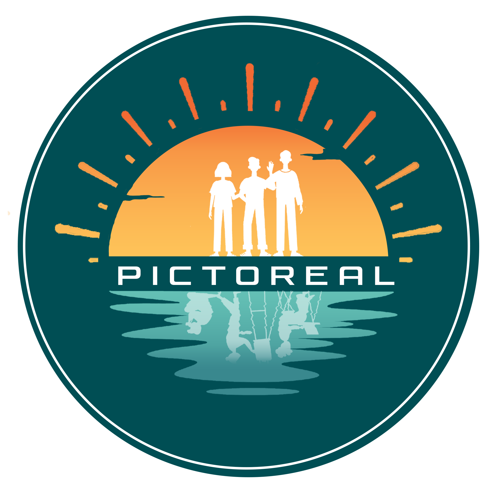
08
PICTOREAL
PICTOREAL is a group of high-spirited and effervescent individuals. It is one of the most sought-after non-technical clubs at Pune Institute of Computer Technology (PICT). It has published 22 vibrant magazines so far, all of them portraying the remarkable contributions of its members
Read moreEDC PICT
Entrepreneurship Development Cell PICT, Pune
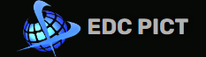
09
EDC PICT
EDC firmly believes that India needs the drive and innovation of the young entrepreneurs. EDC therefore aims at manifesting the latent Entrepreneurial spirit of the youth. EDC was established by the college students, alumni, industry, and faculty, towards the cause of producing quality leaders who contribute to the growth and development of mankind. EDC was inaugurated on 4th march , 2009.
Read morePICT DEBSOC
Debate Society of PICT
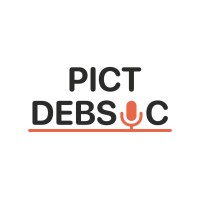
10
PICT DEBSOC
Debate Society of PICT was founded in 2019 by a group of enthusiastic pioneers looking to introduce a platform where the students of PICT could not only enhance their confidence at self-expression through speech, but also engage in intellectually stirring discussions and debate with fellow members of the Society and beyond.Everyone has an opinion. Everyone wants a say. All we need is some guidance and a stage.
Read morePNAB
PICT Newsletter and Brochure
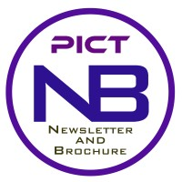
11
PNAB
PNAB design, photograph and write content to broadcast all the official brochures as well as newsletters for PICT. Alongside, we've also helped to draft department specific newsletters and other design assists to the college.
Read moreNSS
PICT National Service Scheme
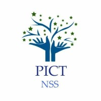
12
NSS
The PICT NSS unit was started in the academic year 2010-11 . In the first year itself,a lot many activities were conducted by the volunteers . All of this was with the guidance of Mrs.Archana Kale,who apart from being the NSS Teacher In-charge , is also the Sports Director of the college .Some of the activities that were conducted in the maiden year were blood donation , tree plantation.
Read more